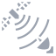

Produkty & Služby
Šest divizí — kompletní portfolio od komunikačních systémů po elektronický boj.
TK-Series — VHF/UHF radiostanice
Vojenské a civilní radiostanice s odolností dle MIL-STD-810. Pokrytí VHF/UHF pásem, šifrované terminály, taktické mesh networks pro armádní nasazení.
Taktické rádiové stanice TK-Series pokrývají celé spektrum VHF (30–88 MHz) a UHF (225–512 MHz) s automatickým frequency hopping až 100 skoků za sekundu, čímž výrazně snižují zranitelnost vůči jammingu a zachycení signálu. Terminály jsou certifikovány dle MIL-STD-810H pro extrémní teploty, vlhkost, vibrace a ponoření do 1 metru. Šifrování probíhá na hardwarové úrovni algoritmem AES-256 s FIPS 140-2 certifikací.
TK-Series podporuje nativní budování taktických mesh network — každé zařízení funguje zároveň jako uzel a relay, což eliminuje závislost na centrální infrastruktuře. Dostupné ve variantách man-portable (TK-41), vehicle-mounted (TK-82) a base station (TK-110). Kompatibilita s NATO STANAG 4204 a 4206 protokoly je standardní součástí dodávky.
